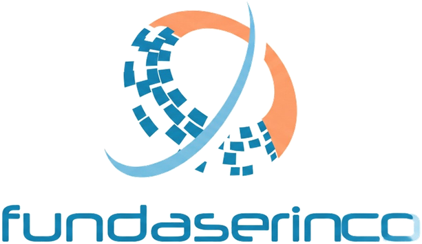
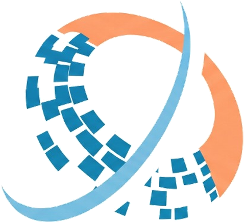

Logo Anatomy & Construction
Official structural taxonomy, spatial clearance ratios, and architectural metrics for the Fundaserinco corporate visual token. Built for systematic fidelity across digital frameworks and physical tactile media.

Logo Morphology & Semantic Grid
The Fundaserinco visual identity combines programmatic fluidity with architectural solidity. The dynamic assembly communicates seamless institutional stability intersecting with modern digital data transformation.

The symbol incorporates three intertwined mechanical motifs:
-
change_circle
The Dynamic Orbital Arc Smooth cyan sweep traversing through the sphere representing continuous operational continuity and institutional elevation.
-
widgets
Modular Pixel Array Segmented digital blocks simulating organized databases, computational rigor, and algorithmic precision.
-
adjust
The Coral Counterweight Warm coral crescent framing the upper perimeter, lending human balance and approachable energy to the institutional blues.
Custom geometric lowercase script designed for optical legibility and rhythmic flow. Softened curvature on letter terminals aligns with the circular geometry of the upper isotype.
Minimum Reproduction Scale
To maintain visual legibility and prevent micro-pixel degradation, Fundaserinco lockups must never be scaled below these verified optical tolerances.
Below 120px, transition to the standalone Isotype mark (32px minimum).
Maintains dot-matrix integrity on uncoated corporate paper stocks.
Isolate the dynamic orbital swoosh without the wordmark text.
Authorized Brand Configurations
Choose between horizontal horizontal lockups, centered primary formats, and negative inverted applications based on context and color contrast requirements.



Incorrect Usages & Restraints
The integrity of the Fundaserinco corporate symbol must never be compromised. The following modifications are strictly prohibited across all digital and print mediums.
Colorimetry & Chromatic Ratios
The mathematical calibration of Fundaserinco's visual spectrum: pairing deep technological stability with energetic dynamic orbital accents, precision contrast thresholds, and production-ready tokens.
Chromatic Balance & Symbiosis
The Fundaserinco chromatic grammar stems directly from the dynamic orbital mark: solid enterprise authority fused with agile digital transformation. Tech Blue anchors 60% of the visual space, conveying institutional trust and digital precision. The Solar Coral counterweight commands 20% high-attention interactions, preventing sterile corporate coldness through warmth and momentum.
Core Chromatic Palette
Precise print and digital ink formulations for physical assets and production interfaces.
Gradient Systems & Directional Trajectories
background: linear-gradient(135deg, #0086C8 0%, #4EA8DE 100%);
background: linear-gradient(90deg, #F48A56 0%, #F97316 100%);
WCAG 2.1 Contrast & Legibility Matrix
Ensuring optical compliance across enterprise dashboard views and mission-critical workflows.
Meets AA for standard 16px body copy and AA/AAA for 18pt+ headlines.
Exceptional clarity. The primary token for long-form reading and critical data arrays.
Standard for solid buttons and key navigation tags. Crisp inverted legibility.
Prescribed pairing for callout badges where white text falls below AA thresholds.
Full Spectral Tonal Scale (50 - 950)
Mathematically stepped luminosity steps for component state mapping, hover halos, and dark interfaces.
Synchronize with Figma & Production Code
All color tokens comply with W3C Design Token Community Group (DTCG) formats.
Typography, Scales & Component Specs
Technical specimen guidelines, orbital font scales, and certified UI component specifications crafted for Fundaserinco's digital infrastructure.
Primary Brand Typography Specimen
Plus Jakarta Sans
Institutional clarity through balanced aperture and distinct digital curvature.
Used exclusively for large atmospheric editorial captions, quotes, and watermarks.
Core workhorse for long-form institutional narratives, body paragraphs, and descriptors.
Subtle emphasis in lists, table cell headers, input hints, and secondary micro-labels.
Standard for interactive triggers, button states, card headings, and navigation anchors.
Section headlines, H1/H2 titles, KPI key figures, and corporate document headers.
Brand impact hero lines, major statistical milestones, and promotional focal points.
Fluid Typographic Scale & Modular Hierarchy
| Level / Role | Live Render Sample | Size • Line-Height | Letter Spacing | Tailwind Utility |
|---|---|---|---|---|
| Display / Hero Weight: 800 (ExtraBold) |
Impulsando el Futuro Digital
|
56px • 64px (1.14) | -0.03em |
font-display-lg text-display-lg
|
| Headline XL (H1) Weight: 700 (Bold) |
Innovación y Solidez Institucional
|
40px • 48px (1.20) | -0.02em |
font-headline-xl text-headline-xl
|
| Headline LG (H2) Weight: 700 (Bold) |
Ecosistema de Servicios Tecnológicos
|
32px • 40px (1.25) | -0.02em |
font-headline-lg text-headline-lg
|
| Headline MD (H3) Weight: 600 (SemiBold) |
Parámetros de Integración Orbital
|
24px • 32px (1.33) | -0.01em |
font-headline-md text-headline-md
|
| Body Large Weight: 400 (Regular) |
Garantizamos sincronía analítica y soporte escalable para operaciones globales. |
18px • 28px (1.55) | 0.00em |
font-body-lg text-body-lg
|
| Body Medium Weight: 400 (Regular) |
Arquitectura robusta que protege la identidad institucional con precisión milimétrica. |
16px • 24px (1.50) | 0.00em |
font-body-md text-body-md
|
| Label Medium Weight: 600 (SemiBold) | Manual de Identidad v1.0 | 14px • 20px (1.42) | +0.01em |
font-label-md text-label-md
|
| Caption / Micro Weight: 500 (Medium) | REGISTRO TÉCNICO OFICIAL • FUNDASERINCO CORP | 11px • 14px (1.27) | +0.04em |
font-caption text-caption
|
Fundaserinco UI Component Library
Interactive Button Spectrum
Tactile feedback, focus halos, and orbital branding cues.
Data Form Controls & Inputs
Accessible 44px hit-targets with integrated geometric icons.
Pill geometries adhere strictly to full circular curvature (rounded-full) to harmonize with the circular orbital logo sweeping motif.
Corporate Stationery & Brand Collateral
Developer Implementation & Tokens
<link rel="preconnect" href="https://fonts.googleapis.com">
<link rel="preconnect" href="https://fonts.gstatic.com" crossorigin>
:root {
--font-primary: 'Plus Jakarta Sans', system-ui, -apple-system, sans-serif;
--color-brand-blue: #0086C8;
--color-brand-coral: #F27036;
--radius-standard: 0.5rem; /* 8px matching Fundaserinco geometry */
}